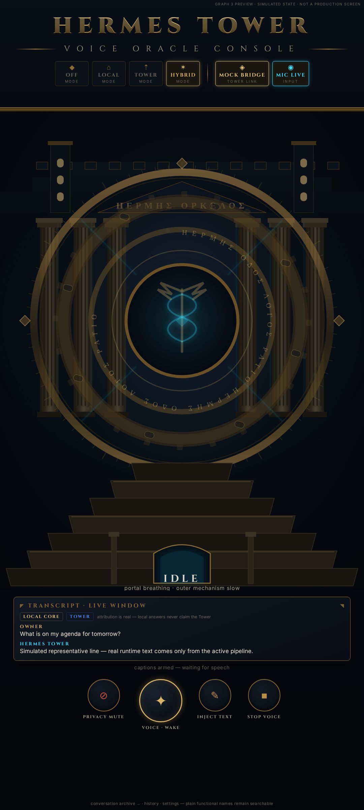

V0.1 — MINIMAL TECHNO-GREEK

OWNER_REJECTED_FOR_VISUAL_IDENTITY · restrained modern interface · single column hero · Material cards · preserved as a superseded baseline
GRAPH 3 — MONUMENTAL ORACLE TOWER

OWNER_AUTHORIZED_FOR_IMPLEMENTATION · live window into the central core · layered architecture · engraved seals · messenger language · state-budgeted OLED luminance (IDLE frame shown)